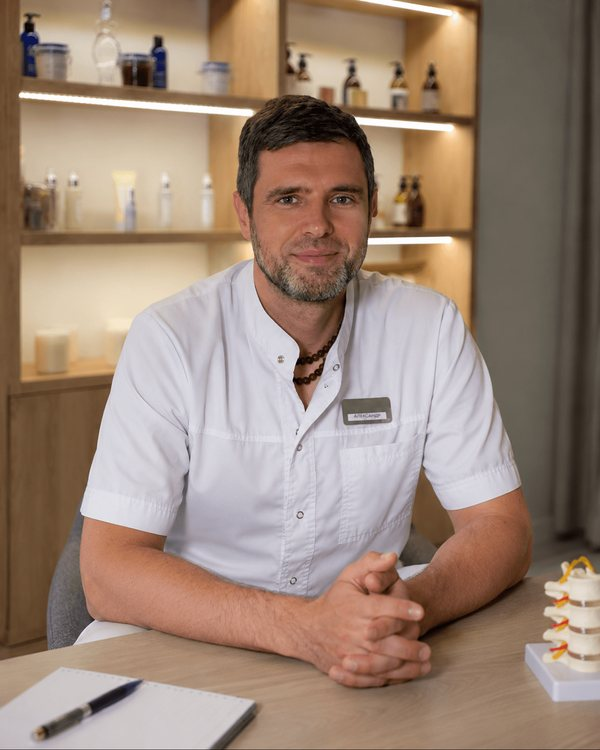
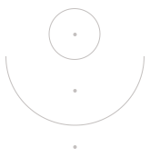
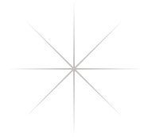
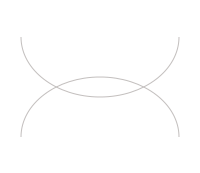
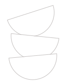
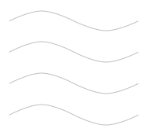
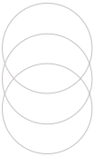
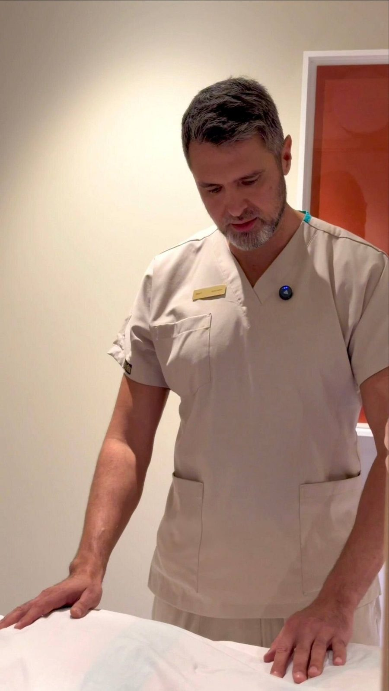
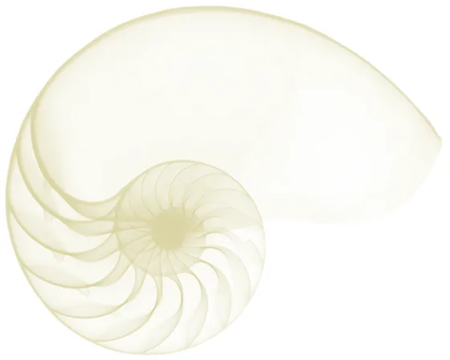
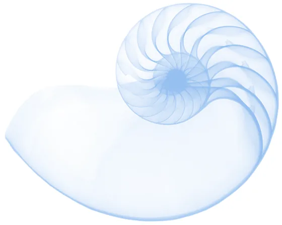

Тело умеет исцелять себя.
Мягкие остеопатические техники.
Работа с хронической болью, напряжением и эмоциональными блоками — через естественные ресурсы тела.

остеопатические сеансы/работа с телом/снижение уровня тревоги/изменение внутреннего состояния/снятие боли/телесно-ориентированные техники/
Усталость, которая не проходит
после отдыха — будто что-то
внутри постоянно работает
Напряжение в теле, которое
стало привычным фоном.
Спина, шея, голова
Тревога без конкретной причины.
Или с причиной —
но непропорциональная ей
Ощущение, что вы
не в своём теле.
Или что тело вас подводит
Что-то не так с деньгами,
отношениями или реализацией —
но непонятно где именно корень
Хроническая боль, с которой вы
уже смирились, потому что
«ничего не помогает»
Тело, психоэмоциональное состояние
и энергия — одно целое.
Я работаю на всех уровнях.

АЛЕКСАНДР ЛЕСНОВ
17лет практики
>35программ
обучения
4000клиентов
Я остеопат. Это значит — я работаю с телом через мягкие техники, которые запускают его собственные процессы восстановления. Без боли, без насилия над тканями.
За 17 лет практики я прошёл 35 программ обучения и провёл более 4 000 сеансов. Среди них — люди с хронической болью, которые обошли десятки специалистов. Люди с тревожностью, которая не поддавалась ни разговорной терапии, ни медикаментам. Люди, которые просто хотели жить легче.
Помимо остеопатии, я работаю с энергетическим и психоэмоциональным состоянием — теми уровнями, куда руки не дотягиваются, но тело держит всё равно.
Как проходит работа
-
Разговор
Сначала я слушаю.
Не только что болит — но как вы живёте, что происходит вокруг.Тело реагирует на всё.
-
Сеанс
Мягкое воздействие на уровне микродвижений. Никакой боли.
Тело само начинает отпускать то, что держало.
-
Интеграция
После сеанса — рекомендации и план. Иногда достаточно одной встречи. Иногда нужна серия.
Я скажу честно.
Услуги


Два направления — для разных запросов.
Иногда достаточно работы с телом.
Иногда нужно идти глубже.
Я всегда понимаю, что подходит именно вам.
-
ОСТЕОПАТИЧЕСКИЙ СЕАНС
- остеопатия
- работа с телом
16 000 ₽
-
БИОЭНЕРГЕТИЧЕСКОЕ ИСЦЕЛЕНИЕ
- остеопатия
- работа с телом
- работа с состоянием
от 100 000 ₽
-
ДИСТАНЦИОННАЯ СЕССИЯ
- онлайн
- работа с состоянием
20-минутная работа по фото или онлайн.
Снятие острого напряжения, подзарядка перед важным событием.от 6 000 ₽
-
ПЕРЕЗАГРУЗКА
- онлайн
- работа с состоянием
- возможно в группе
от 30 000 ₽ / месяц
-
ДЕНЕЖНЫЙ ПОТОК
- онлайн
- работа с состоянием
2 сеанса.
Работа с финансовыми блоками и ограничивающими убеждениями на глубинном уровне.350 000 ₽
-
ДУХОВНОЕ ПЕРЕРОЖДЕНИЕ
- онлайн
- работа с состоянием
Месячное наставничество.
Трансформация на уровне сознания — для тех,
кто готов к глубокой работе.1 000 000 ₽
За 17 лет накопленного понимания тела,
за тысячи сеансов — я научился слышать то, что не видно ни на МРТ, ни в анализах.
Тело запоминает новое состояние.
Это не временное облегчение — это запуск процесса, который продолжается после сеанса.
Если вы не почувствуете результат — все средства будут возвращены.
С какими запросами приходят чаще всего
- Боль в спине, шее, пояснице
- Хроническая усталость
- Тревожность и панические атаки
- Нарушения сна
- Эмоциональные блоки и апатия
- Финансовые паттерны и ограничения
- Проблемы отношений
Обратная связь
моих клиентов

Юлия
С Александром меня познакомила сама судьба… случайность, которая подарила мне полное осознание, что передо мной не просто остеопат.
С первых минут ощущения его рук я точно поняла, что Александр — великолепный энергопрактик (в моей жизни их было много, и можно сказать, я уже неплохо ‘чую’).
Во время сеанса я чувствовала, как он буквально ‘вливает’ в мое тело потоки божественной энергии.
Спустя год я прошла трехмесячную ‘перезагрузку’ (опять же, только потому, что я всем нутром чувствовала, что мне помогут).
Так и произошло — мой запрос был целиком исполнен 🤍.
Рекомендую данного специалиста от всего сердца всем, кто чувствует отклик на деятельность Александра.
Дмитрий
Я очень рад, что вообще познал, что такое остеопатия (причём качественная!). На самом деле хочу тебя поблагодарить за твою работу.
Когда идёт сеанс, ощущение, что ты медитируешь просто. Расслабляется тело, напряжение будто всё уходит куда-то, вот честно будто заново рождаешься. Я не понимаю как ты чувствуешь где зажимы, что нужно проверить и с чем поработать, но я реально ходил к врачу и он все подтвердил.
А очищение головы это вообще моё любимое. Я человек тревожный и мои мысли меня с ума просто сводят, и как я обожаю это чувство, когда встаёшь после остеопатии с пустой головой и ощущением, что познал смысл бытия (как я это называю). А еще по секрету - все мои запросы, которые я делал перед сеансом, каким то образом запустились и я вижу результат. В общем, хотел сказать тебе большое спасибо!
Елена
С Александром познакомились 3 года назад. Александр классный специалист и очень душевный человек. Прекрасное восстановление, и результат налицо.
Я прохожу сеансы биоэнергетического восстановления. После таких сеансов восстанавливаются жизненные силы, энергия, настроение улучшается. В общем чувствую себя замечательно. После первого же сеанса ушла боль и тяжесть в правом боку, тело стало уютным и безболезненным. после второго - те же ощущения, чуть позже стала "ныть" поясница, на второй день боль прошла! С ней же исчезла стреляющая боль от правой лопатки в висок)
Благодаря Вам отдых прошёл без осложнений! Благодарю Вас, Александр, мне хорошо, и это так здорово и приятно! Всем рекомендую!
Николай
Александр - прекрасный специалист! После сеанса остеопатии такое чувство, что заново родился, легкость в теле и прилив энергии, давно такого не ощущал! За время сеансов прошли боли в пояснице, которые давали о себе знать на протяжении нескольких лет. Вообще в нашем городе это известный остеопат. За три сеанса в моём случае все как рукой сняло. На сеанс я буквально приполз, сейчас уже нормально иду, боли в спине стали уже меньше.
Также после сеанса исцеления я понял, что у меня открываются новые пути на которых как казалось бы, нет ни сил, ни финансовых ресурсов. Я понял в каком направление могу двигаться. И самое главное - начал реализовывать задуманное. Смело рекомендую данного специалиста тем, кто ищет лучшего остеопата в нашем регионе (да и не только в нашем!)
Никита
Саша, привет! Очень давно уже искал мастера, который может эффективно и просто «как рукой снять» всю херню, что налипла на ментал и физику. И очень благодарен ,что встретил именно тебя, доброго, мощного, принимающего и помогающего самому себя принять, - реального целителя, после встречи с которым процесс жизни и самоощущения улучшился, а многие процессы реально сдвинулись с полного мертвяка!
Хочу от сердца поблагодарить тебя за эту помощь и поддержку, особенно в трудное пред и пост операционное время, так держать, обязательно буду почаще проходить техосмотры!
Мария
Доброе утро. Александр, этим воскресным утром хочется оставить отзыв. Про боли и онемение я уже писала, что их стало меньше, так все и осталось. Хочу сказать по поводу отношений и подарочек: от конфеток до колечка с бриллиантами) Работа с телом и биополем дало свои ПЛОДЫ! Плюс смена работы, которая дополнительно высасывала мои силы. Спасибо Вам ещё раз, что подарили тогда такую возможность попасть на приём!